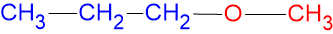
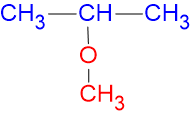
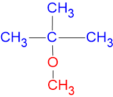
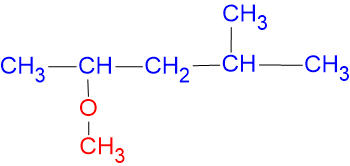

Struktur
En ether har følgende struktur:
De to radikaler (R1 og R2) kan være ens eller forskellige.
Navngivning
Ethere kan navngives efter to forskellige måder. Den første metode går ud på at finde den længste carbonkæde, i den anden metode ser man på hvilke substituenter (R1 og R2) der er bundet til oxygenatomet. I det følgende vil de to metoder blive kaldt carbonkædemetoden og substituentmetoden.
Carbonkædemetoden
I carbonkædemetoden finder man den længste carbonkæde (hovedkæden) og navngiver ud fra det tilsvarende alkan. Den resterende del af molekylet ser man så som en substituent.
Substituenter af typen R-O- får endelsen "oxy", de tre første er vist herunder.
| methoxy | CH3-O- |
| ethoxy | CH3-CH2-O- |
| propoxy | CH3-CH2-CH2-O- |
Vi kan nu navngive ethere. I de følgende eksempler er hovedkæden vist med blåt, substituenten med rødt.
| CH3-O-CH3 | methoxymethan |
| CH3-CH2-O-CH3 | methoxyethan |
| CH3-CH2-O-CH2-CH2 | ethoxyethan |
Når der er 3 eller flere C-atomer i hovedkæden, er der flere muligheder for substituentens placering.
 |
1-methoxypropan |
 |
2-methoxypropan |
Der kan naturligvis også sidde alkylgrupper på hovedkæden.
 |
2-methyl-2-methoxypropan |
 |
2-methoxy-4-methylpentan |